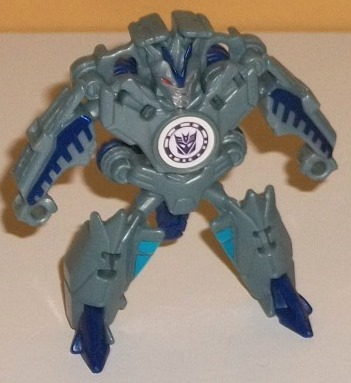

Allegiance : Decepticon
Size : Mini-Con
Difficulty of Transformation : Very Easy
Color Scheme : Milky semi-metallic aquamarine, transparent moderately dark orange, and some dark glossy blue, silver, and red
Individual Rating : 4.0
Set Price
: $15 U.S.
Overall Rating
: 5.2
(NOTE: Because this set is composed mostly
of repaints, this is not a full-blown review. This mainly covers any changes
made to the relevant molds and their color schemes, and merely compares
them to the original versions of these molds. For a review on the normal
version of Backtrack, go
here
. For a review
on the normal version of Beastbox, go
here
.
For a review on the normal version of Swelter go
here
.)
 Backtrack
(Blizzard Strike)
Backtrack
(Blizzard Strike)
Allegiance
: Decepticon
Size
: Mini-Con
Difficulty of Transformation
: Very
Easy
Color Scheme
: Milky semi-metallic
aquamarine, transparent moderately dark orange, and some dark glossy blue,
silver, and red
Individual Rating
: 4.0
The "Blizzard Strike"
version of Backtrack largely fits the bill, with his main color of the
"base toy" being a semi-metallic shade of aquamarine-- it's got a bit of
glitter in it, and even just by itself is a really nice shade and looks
rather "aqua-arctic-y" as well. The main contrast color is a dark glossy
shade of blue-- again, a nice shade by itself, but it both complements
and contrasts against the aquamarine nicely. There's some dark blue plastic
on some of the interior "robot parts" for the upper legs and connector
bits, as well as some nice decorative angular paint apps on the front of
the ball/robot mode. There's also some blue lines along the bottom half
of the ball mode, but sadly those paint apps don't follow those circular
mold details all the way around. For some accent colors, just like his
"regular" version Backtrack has a silver face and red eyes, and the circular
bit in the middle of his body is painted red as well. For his armor pieces,
Backtrack has some orange transparent bits-- not a fiery orange, but a
bit darker and duller than that (putting them up to the light still looks
pretty cool, though). Obviously this contrasts very well against a toy
that is otherwise almost entirely blue, and Blizzard Strike Backtrack just
has a great color scheme overall. Shame about the mold, though.
No mold changes have
been made to Blizzard Strike Backtrack.
 Beastbox
(Scorch Strike)
Beastbox
(Scorch Strike)

Allegiance
: Autobot
Size
: Mini-Con
Difficulty of Transformation
: Very
Easy
Color Scheme
: Moderately dark brown,
moderately light muddy brown, and some moderately light sky blue and metallic
gunmetal gray
Individual Rating
: 4.7
The "Scorch Strike" version
of Beastbox is basically meant to fit in a desert, and here Beastbox does
the job pretty well. Largely speaking, his arms are a fairly light muddy
brown, and his main body is a much darker brown. They both contrast and
complement each other pretty well, though having so much of him being a
color such as brown-- regardless of the shades-- isn't the most eye-catching
choice, though it's far from bad, either. I do like the attempt to "vary
things up" a bit, with some dark brown paint on his fromt lower arms and
on his headcrest. His face has a GREAT shade of gunmetal gray on it, and
his eyes and the little dots on his "shoulder guns" are a nice light blue.
This last color looks quite good and I wish it was used just a bit more
on the toy for some more color variety. Still, overall he looks pretty
decent and has slightly more color variation in robot mode when compared
with the original.
No mold changes have
been made to Scorch Strike Beastbox, but unfortunately his armor bits have
been taken away, which is why his score is a bit lower than the original's.
Unfortunately that's part of the price you pay for the discount price of
these Mini-Con 4-packs, which cost the same as 3 individually-packaged
Minicons; 2 of them don't come with armor, and Beastbox here is one of
them.
 Swelter
(Blizzard Strike)
Swelter
(Blizzard Strike)

Allegiance
: Decepticon
Size
: Mini-Con
Difficulty of Transformation
: Very
Easy
Color Scheme
: Moderately light grayish
blue, dark rich blue, and some dark metallic rich blue, silver, moderately
light sky blue, and red
Individual Rating
: 5.4
Blizzard... Strike...
Swelter. Ooookay. Did they even know they were repainting this mold into
Glacius at this point, who is kinda the same thing? Well, regardless of
the nonsensical name, Blizzard Strike Swelter has some pretty nice main
colors. By far the most prevalent is a fairly light grayish blue, which
looks kind of like "dirty" arctic ice and of course fits the theme of the
redeco. What I REALLY like about the color scheme is the rich shade of
dark blue plastic used for his toes and much of his back. It's just SUCH
an attractive color and very eye-catching, and of course it both complements
and contasts against the light gray-blue. Even better, there's a metallic
version of this color used for paint on the headcrest and on angular details
on his arms. On a lesser note, his face is painted silver with some red
eyes. Finally, there's some sky blue paint used for the "cockpit window"
of his torpedo mode, adding in another shade of blue to the mix. Even though--
like pretty much any Mini-Con-- Swelter could've still used a few more
paint apps, he definitely looks more visually interesting than the original.
No mold changes have
been made to Blizzard Strike Swelter, though like Scorch Strike Beastbox
his armor pieces are gone to fit into the 4-pack pricepoint.
 Undertone
(Scorch Strike)
Undertone
(Scorch Strike)
Allegiance
: Autobot
Size
: Mini-Con
Difficulty of Transformation
: Very
Easy
Color Scheme
: Moderately light muddy
brown, transparent dull orange, and some moderately dark brown, moderately
light sky blue, silver, and yellow
Individual Rating
: 6.6
Undertone is the only
new mold in the pack (at least in terms of it being the first "appearance"
of the toy), and oddly enough they released the "Scorch Strike" variant
of him before the regular version! I guess it's to fit in with his fellow
Autobot Mini-Con Beastbox... Anyways, Undertone is the only Autobot Mini-Con
ball, which is kinda weird as he has no one to deploy him. Regardless,
in ball mode he's largely pretty solid, being quite round with two ridges
of spikes on the sides of the "center stripe", in a manner similar to
Hammer
.
There's some pretty intricate mold detailing, like circuitry and armor
lines all over his armored hull, and some patterned lines near the flattest
area in between the spike rows. There's some visible robot mode extras
in this mode, the most obvious one being two definite "gaps" in the middle
formed by the piece that becomes the robot legs-- there's a noticeable
hole where the bottom of the feet has folded up against the main section
of this mode and about a quarter of the way further down the middle of
the ball, there's several smaller holes made by the leg piece folding away
from there. It's definitely noticeable, but it's difficult to see how to
make a ball that becomes a decent robot in one step WITHOUT a few oddities
in the ball mode, so although these are definitely issues, I don't consider
them huge ones. On a lesser note, the top of the head is a little obvious,
as there's two stripes of yellow paint there but nowhere else on the toy,
which is almost entirely a fairly light muddy brown. By far this shade
of brown is the most prevalent color on the toy-- especially in this mode--
and I wish there was a bit more coloration. The yellow sticks out juust
enough to make the head obvious, but isn't enough to really make much difference
in regards to the color scheme. I DO love the blue jagged circuitry lines
on each side, but I wish they were used more thoroughly throughout the
whole mode-- being used just a little on one quarter of this mode is kinda
odd-looking. There's also a bit of fairly dark brown used on the lower
arms as well as on the clip pieces that help launch him from a Deployer.
While I like that they complement and contrast against the lighter brown
a bit, on the lower arms they make those pieces obvious in this mode when
otherwise they would not be. (The arms don't really stick out at all in
terms of their shape if you don't pay attention to the color.)
To transform Undertone
to robot mode, you just slide the sides of the ball mode out at the shoulders,
and the rest auto-transforms. Then you simply rotate the arms forward at
the elbows, and you're done. (These points are the only points of articulation
on the toy-- back-and-forth at the elbows. But hey, it's more than some
other Mini-Cons.) In robot mode Undertone is remarkably solid. I LOVE the
large sections of the ball that give him beefy shoulders-- that's definitely
the most unique aspect of this mode. The legs are merely molded onto the
underside of the ball section that folds down, but they're molded in quite
well, with little angular details all over the place-- no "2-D legs" here.
The chest is also molded pretty nicely, and almost looks like it's an animal
chest folded up, what with the blue paint apps on the chest that look like
eyes. (Are we sure Undertone wasn't a Beast Wars toy in a former life?)
The head is a nice sturdy-looking headsculpt, with narrow blue eyes, a
silver faceplate, and a fairly roundish head that's molded into the body,
making him a bit of a hunchback. The color of Undertone's armor bits is
a transparent dull orange, which unfortunately doesn't really add much
to the color scheme-- they're too similar to the shades of brown. Still,
the parts themselves are pretty cool. He's got two knife-like armor bits
that peg into his lower arms; two curved pieces that cover his ankles and
part of the back of his lower legs; two pieces that go on the front of
each of his massive shoulders; and a pretty cool detailed armored chestplate/face
mask that makes him look more knight-ish. The leg pieces' peg holes are
a bit shallow, so they can fall out a little easier than I'd like, but
otherwise everything pegs in pretty well, and they all can stay on in ball
mode, to boot.
The "Scorch Strike vs.
Blizzard Strike" Mini-Con pack, while not an outright BAD buy, is probably
the easiest skip out of the three different Mini-Con 4-packs. The Blizzard
Strike toys have great color schemes, but the Scorch Strike toys have more
boring/dull color schemes. Additionally, most of the molds are not the
best the RID2015 Mini-Cons have to offer, regardless of whether the colors
are better and worse. The only mold whose first appearance is in this pack,
Undertone, gets a better color scheme in the 2nd Mini-Con multipack. Recommended
if you're a big Mini-Con completist or want a version of Undertone with
armor; otherwise, skip.
Reviews by Beastbot